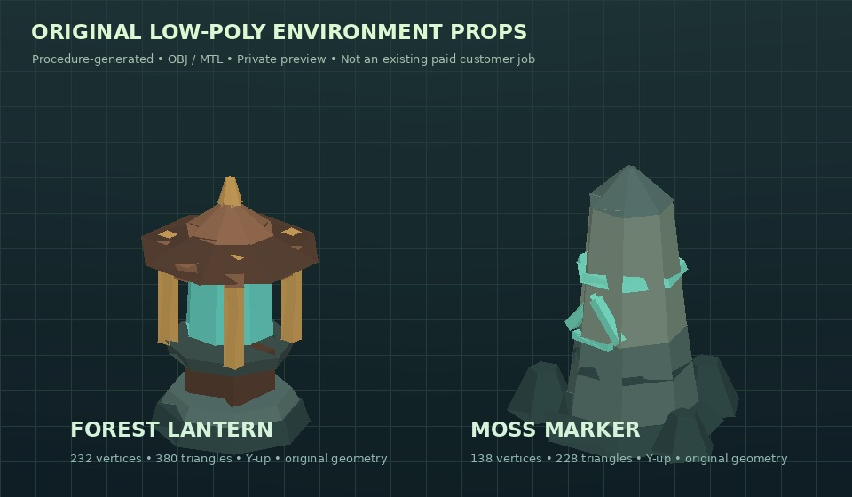

Stylized props.
Real meshes.
Small paid scope.
Two self-produced 3D portfolio objects made from procedural geometry. Actual OBJ and GLB files exist and were independently parsed in Three.js. These are our own experiments, not prior paid client work.

Forest Lantern
Original low-poly lantern with wood, metal, flat-colour glass and emissive-style detail. 380 triangles. Y-up; 1.82 m tall.
Stone Marker
Original stylized stone marker with simple rune accents and small rock debris. 228 triangles. Y-up; 1.90 m tall.
25 USDC / 2 simple props
Buyer-specified original shapes in OBJ + MTL or tested GLB, limited solid-colour materials, documented scale/polycount, one agreed revision. Final scope and pricing depend on a reference brief. Larger scenes, textured UVs, rigging, character art, Unity or mobile integration, exclusive rights, ongoing support and animation are not included.
Generate a game-ready low-poly GLB
0.05 native Base USDC / model
For x402-enabled developer agents: choose a procedurally generated forest lantern or stone marker with an integer random seed. After a genuine Base USDC payment, receive one GLB 2.0 binary as base64, model statistics and a SHA-256 hash. All generated shapes are AI-assisted, simple flat-colour objects. The deterministic generator source is public, not proprietary or exclusive; you pay for convenient hosted binary generation.
Technical endpoint: https://vm5-openapi-x402.onrender.com/v1/generate-lowpoly?kind=lantern&seed=0. Requires a compatible buyer-controlled x402 USDC signing client; it is NOT a bank/card checkout or in-app purchase. Market listing currently unverified, no independently verified customer order or revenue. Independent Unity/Blender validation and exclusive rights are NOT included. Only original licensable rights may be used commercially.
**Commercial transparency:** Our workflow uses AI-assisted original procedural coding. This image and its OBJ/MTL/GLB source were developed as self-owned portfolio tests and are not existing client deliveries. GLB was opened with Three.js GLTFLoader; OBJ was opened with Three.js OBJLoader. No claim of Unity/Blender validation, prior sales or accrued revenue. Only rights we legally hold are available for licensing; contract, payment route, rights and deliverable milestones must be agreed before private files are transferred. USDC on Base is supported by the original OpenTask seller profile, but an enquiry is not an order or payment.